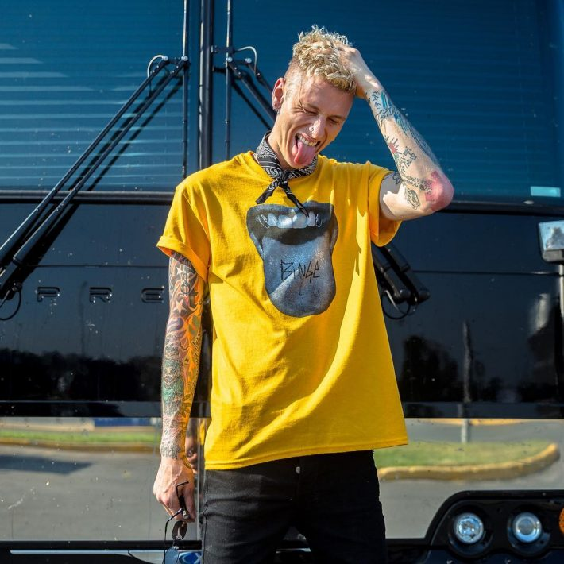
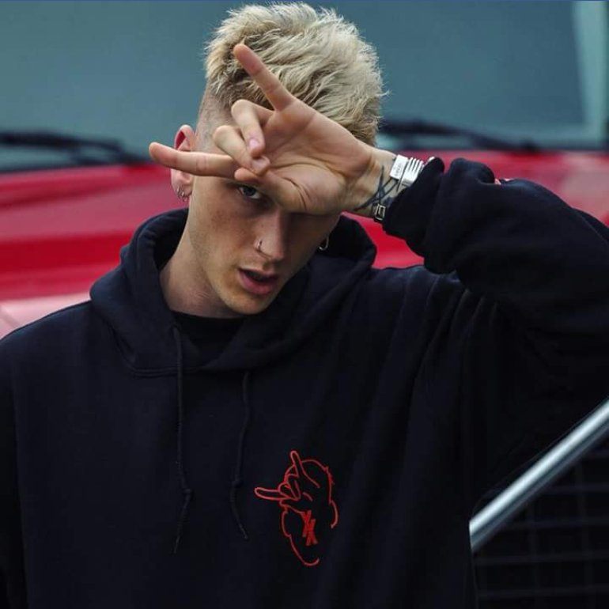
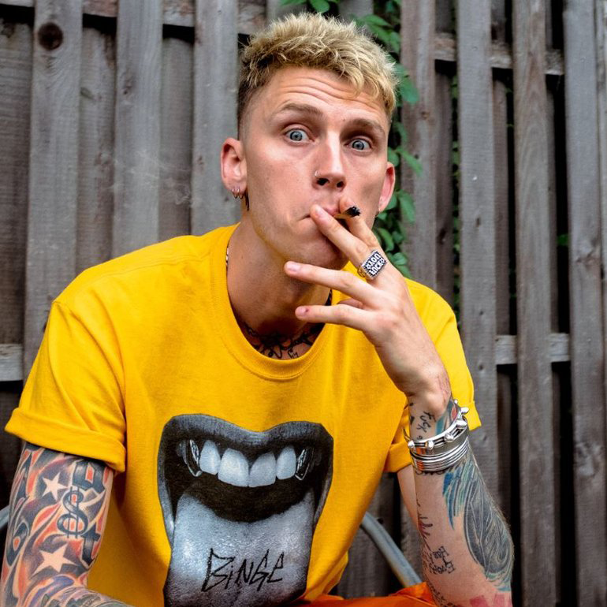

Richard Colson BakerРичард Колсон Бэйкер (Richard Сolson Baker) родился 22 апреля 1990 года в Хьюстоне, Техас. Родители мальчика много путешествовали, поэтому ему довелось пожить в Германии, Египте, Чикаго, Девнер и Кливленде. Будучи активным подростком, Ричард стал интересоваться суб-культурами. С 6-ти лет он начал слушать рэп. Свой псевдоним музыкант взял в честь известного гангстера Джорджа «Пулемет» Келли. В 2011 году Ричард подписал контракт с Джемми Айовином и Дидди. Его первый сингл «Wild Boy» вышел 27 сентября 2011 года. Песня заняла 98 строчку в чарте US Billboard Hot 100. Вторая песня рэпера ««Invincible» была использована в рекламе для HTC ReZound. Свою известность получил после выхода четырех микстейпов: «Stamp Of Approval», «Homecoming», «100 Words and Running», «Lace Up». В 2012 году стал лицом обложки журнала «XXL». В 2016 году музыкант попробовал себя в роли актера в фильме «Вирус». У артиста имеется дочь Кейси (род. в 2008 году). MGK открыто говорил о своей двухлетней героиновой зависимости, упоминая об этом в своей песне «Lead You On». Также об этом упоминается в песнях «Alice in Wonderland» и «Eddie Cane». Во многих интервью упоминал, что ежедневно курит марихуанну, описывая это «как источник счастья и способ, благодаря которому люди могут почувствовать немного больше любви». Касаемо его философии, MGK позиционирует себя,как анархист. |
Cleveland - Родной город,который он не один раз упоминал в своих треках.Артист даже записал трек и снял клип в честь него. |
Bad Things |
Breaking News |
Halo |
||||||||||
Текст песни Am I out of my head? Am I out of my mind? If you only knew the bad things I like Don't think that I can explain it What can I say, it's complicated Don't matter what you say Don't matter what you do I only wanna do bad things to you So good, that you can't explain it What can I say, it's complicated Nothing's that bad If it feels good So you come back Like I knew you would And we're both wild And the night's young And you're my drug Breathe you in 'til my face numb Drop it down to that bass drum I got what you dream 'bout Nails scratchin' my back tatt Eyes closed while you scream out And you keep me in with those hips While my teeth sink in those lips While your body's giving me life And you suffocate in my kiss Then you said I want you forever Even when we're not together Scars on my body so I can take you wherever like I want you forever Even when we're not together Scars on my body I can look at you whenever Am I out of my head? Am I out of my mind? If you only knew the bad things I like Don't think that I can explain it What can I say, it's complicated Don't matter what you say Don't matter what you do I only wanna do bad things to you So good, that you can't explain it What can I say, it's complicated I can't explain it I love the pain And I love the way your breath Numbs me of novacaine And we are Always high Keep it strange Okay, yeah, I'm insane But you the same Let me paint the picture Couch by the kitchen Nothin' but your heels on Losin' our religion You're my pretty little vixen And I'm the voice inside your head That keeps telling you to listen to all the bad things I say And you said I want you forever Even when we're not together Scars on my body so I can take you wherever like I want you forever Even when we're not together Scars on my body I can look at you whenever Am I out of my head? Am I out of my mind? If you only knew the bad things I like Don't think that I can explain it What can I say, it's complicated Don't matter what you say Don't matter what you do I only wanna do bad things to you So good, that you can't explain it What can I say, it's complicated The way we love, is so unique And when we touch, I'm shivering And no one has to get it Just you and me 'Cause we're just living Between the sheets I want you forever Even when we're not together Scars on my body so I can take you wherever like I want you forever Even when we're not together Scars on my body I can look at you whenever Am I out of my head? Am I out of my mind? If you only knew the bad things I like Don't think that I can explain it What can I say, it's complicated Don't matter what you say Don't matter what you do I only wanna do bad things to you So good, that you can't explain it What can I say, it's complicated |
Текст песни No mercy has begun Ladies and gentlemen Machine Gun Kelly This kid, I think he is a star He's one of the best live performers I've ever seen He's also more importantly a movement Backpack? Fuck that I was always hanging where the thugs at I was always hanging with the rugrats Someone come and show me where the drugs at Someone come and pop on a hot song, meaning my shit, get an iPhone take a video and make it last long get some popcorn because I murder every single instrumental that I get on And a muthafucka isn't gonna stop the shit Until I make an album like a 2pacalypse Until I'm killing everybody like in Auschwitz Until I'm revolutionary like a Gandhi is Until I'm poppin' all these bottles to accomplishments Until I'm always hot no matter what the climate is Until whenever somebody is feeling talkative my name is brought up, doesn't matter what the topic is Didn't think I rap? Bitch I flow like "boom boom bap" Bitch I come from where you never moved at Look into my room get a view, look at my past God damn Got weed, got jack, oxy's? Had that Got Jimi, got Slash, got shrooms, got hash Bipolar syndrome, kicked in, got mad Walked on the red carpet like kiss my ass you bitch (More Sound Clips of Various People talking about MGK) He was truly the only developed on-point performer on the bill If you know anything about lyricists, then you know who MGK is I need a freestyle, I need to hear Machine Gun Kelly spit Fuck that, y'all don't gotta hear shit Ask anybody in the 216 if my name rings bells in them bricks "Man everybody know who that is" What you hate, boy? You late, boy You ain't heard about that great boy? 3 letter name cacausian boy Used to live right there up the way, boy You heard about him, you've said the name You saw the iTunes and clicked to play You liked the shit and you bought the shit Put him on the playlist right next to Jay Then your girl saw me, I signed her tits And she disappeared you couldn't find the bitch Then your heart stopped you know what time it is I put my dick in her common sense Fuck boy you lonely Fuck boy you phony You would think these fuck boys fucking boys with the way that they be all on me If it ain't EST in your mouth...then whatever you rep is corny Got a new single without me on it? That shit's boring, bitch I'm snoring Man I'm touring every damn day I showed y'all how to turn up 100 j's in my ashtray bitch I showed y'all how to burn up I sacrificed what y'all wouldn't give to these kids and now you love fans? None of these rappers got a movement tell 'em quit jocking my ass God damn... And y'all can have the bloggers I don't type shit God gave me both these hands to fight with Wassup!? Now say goodnight quick because my right fist's like Vicodin Might just throw you on the ground like dices Might just go into the pocket with your license, get a wallet and a couple dollars, buy nice shit Dyke bitches all over my dick, that's priceless I just fuck 'em if they're wet like Pisces Wives is jealous of the bitch I'm with cause they almost F'd like D-...get it? Digest every little word I'm spittin' cause it's food for thought so pay attention Better listen, I’m on a mission to killing off all of my competition and if you are with that then good riddance muthafucka! Now Machine Gun Kelly seems like somebody you would diss, lyrically I wouldn't think you'd like Machine Gun Kelly What are you trying to say, he's wack or something? He is wack He's not wack He's better than 80% of the rappers out there It must be nice being MGK right now The rapper recently released what he says to be the true meaning of his Lace Up movement If there was ever a musical speaker that I could put out there for my personality, Machine Gun Kelly was it |
Текст песни Uh, this ain't no halo over my head, bitch But dear God, can you forgive the sinning For everything I done did since my beginning Because the devil around me so much that you would think I got a death wish? Yeah, and the voices in my head get louder Watching my career disappear like powder (Poof) Wish I could rewind those hours and get my life back (Back) Strike that, clinging to this weed like a life jacket (Yeah) Fuck rapping, I was really living everything that I was spitting, bitch What's happening? (Wassup) Fights daily, nights crazy, dream chasing till the drugs came in I was chopping up them bitches like Jason Had a muthafucker's face laying on the cold pavement (Uh) Wake up, take 'em, now I feel sane (Whoop) Spending every penny in the studio slaving (Yeah) Me and my mob working any odd job Praying that this little dream was gonna feed our babies Save me Lord, save me Lord, what the fuck is this curse you gave me Lord? Everybody think I finally made it Lord, but all I am now is a slave, my God And Revelation says "He will wipe every tear from their eyes and death shall be no more Neither shall there be mourning, nor crying, nor pain anymore For the former things have passed away" EST for life, muthafucker! Ughk, put that halo around my neck, bitch (Bitch) And gimmie death I'm twenty-two and this twenty-two on my left, God bless Maybe I'll finally sleep Maybe they'll return what's originally mine, cause finder's keep Maybe I will be great, and this voice of mine was designed to be the finest key But, I'm losing faith (Ok) Everyday they got news to break Like my single flopped, and now I ain't hot And they don't know if Imma ever gonna see the light of day It's "My labels mad" or "My albums bad" or "You ain't living up to the hype we thought you had" Or I lost a fan, or I'm in cuffs again Yeah, meanwhile I ain't there to be my daughter's dad Fuck what's meant for me, because I don't ever wanna become a celebrity I don't ever want someone to feel less than me So put your camera down and stand next to me (Right here!) EST, Everyone Stand Together And if I, ever R-I-P, then I know everything I stand for's forever Lace Up! And when you play this song Hold your head high, muthafucker Don't ever look down because of who you are Our flaws are what makes us perfect |
 |
 |
|
 |